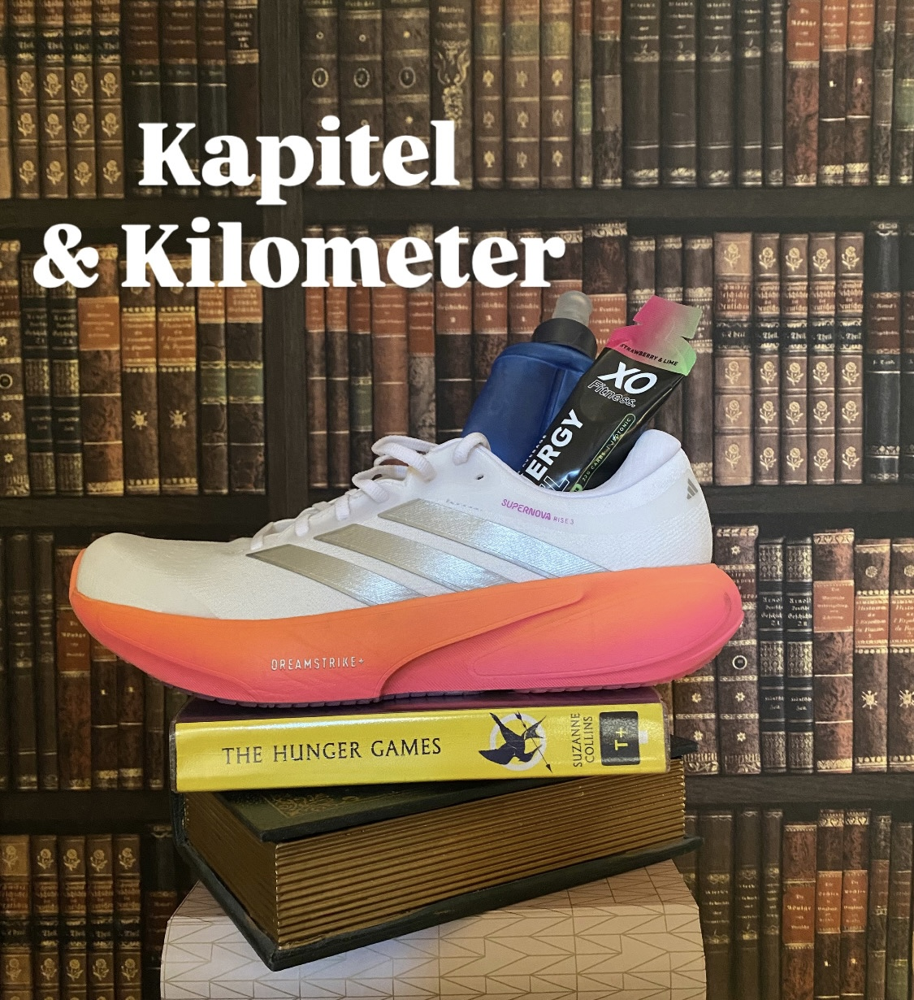

DER PODCAST
Kapitel & Kilometer
Begleite zwei Schwestern zwischen Lesestoff und Laufschuhen.
Folgen entdecken ↗
NEUESTE EPISODEN
Hör rein.
Alle Folgen, automatisch aus unserem RSS-Feed.
Folgen werden geladen …
ÜBER DEN PODCAST
Begleite zwei Schwestern
zwischen Lesestoff und Laufschuhen.
Wir sind Alexandra & Tamara und trainieren aktuell für einen Halbmarathon. Damit das Lesen aber nicht zu kurz kommt, möchten wir den Podcast als eine Mischung aus Lauf- und Buchclub nutzen. Jede Staffel wird eine Buchreihe besprochen, die eine von uns schon kennt. Die andere liest sie zum ersten Mal. Also schnappt euch gerne die Bücher und lest mit uns mit! Oder schnürt eure Laufschuhe und begleitet uns auf dem Weg zum Halbmarathon. Immer Mittwochs bei Kapitel & Kilometer.